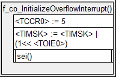
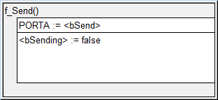
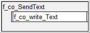
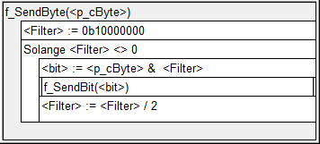
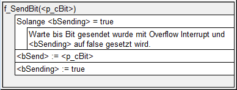
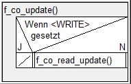
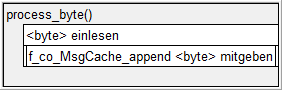

Protokoll Beschreibung (comprotocol)
Ein sehr einfach gehaltenes Kommunikationsprotokoll. Das Protokoll wird für schulische Zwecke genutzt und dient zum lernen.
code api
Protokoll Aufbau
Des Prtokoll ist wie folgt aufgebaut:
- Entweder kann man einfach einen Command senden
| 1 Byte | |
|---|---|
| 1 | initialisierung |
| 2 | Ziel ID |
| 3 | Source ID |
| 4 | command (max 127) |
| 5 | Checksumme |
- Oder einen Text übermitteln
| 1 Byte | |
|---|---|
| 1 | Initialisierung |
| 2 | Ziel ID |
| 3 | Source ID |
| 4 | command(text) + textlänge |
| 5 | TEXT (max 128byte) |
| 6 | Checksumme |
Keine Übermittlung
Bei keiner Überittlung wird die Verbindung immer auf 1 gehalten. Wichtig beim lesen und schreiben von Nachrichten muss dieser Wert umgekehrt (1 auf 0) gesetzt werden. Bei dieser Dokumentation wird davon ausgegangen, dass das ausgehende oder eingehende Byte bereits umgekehrt, also 0 bei keinem Senden erhält.
Initialisierung(#Initialisierung)
Um zu erkennen, dass eine Nachricht übermittelt wird, wird ein Initialisierungs Byte genutzt. Dieses muss immer 1010 1010 betragen. Dies wird einheitlich bei allen Kontrollern, die dieses Protokoll nutzen.
Ziel ID
Die Ziel ID ist eine 1 Byte grosse Zahl, die genutzt wird um zu erkennen, an wen man die Nachticht senden möchte.
Source ID
Die Source ID wird genutzt um zu erkenne, von wem die Nachricht ist und an wen man antworten sollte, sollte eine Antwort benötigt werden.
Command übermitteln
Beim Command übermitteln wird bei dem command byte(4) das erste byte auf 0 gesetzt. Die restlichen können zur übermittlung des Commands genutzt werden.
Kurze Command list
Hier eine kurze liste der haupt commands. Das Protokoll wurde dafür gebaut, damit man jederzeit eigene commands hinzufügen kann.
| byte | name |
|---|---|
| 000 0001 | Okey |
| 000 0010 | Fehler: Neu senden |
Text übermitteln
Beim Übermitteln eines Textes wird beim command byte(4) des erste byte auf 1 gesetzt und die restlichen bytes dafür genutzt, um die grösse der kommenden Nachricht zu übermitteln.
Checksum
Benörigt um die erhaltenen bytes zu kontrollieren. Die checksumme ermöglicht es zu erkennen, ob ein fehler bei der Übermittlung entschaden ist.
Die Checksumme wird erstellt indem man alle zuvor gesendeten bytes XOR miteinander verknüpft.
Structure chart
Das structure chart aller Funktionen:

Funktionen Struktugram
Alle Struktogramme:
f_co_initializeOverflowInterrupt

f_co_send

f_co_sendText

f_co_sendByte

f_co_sendBit

f_co_init_waitmode

f_co_update

f_co_processbyte

API
Die Funktionsbeschreibungen und Dokumentation ist unter folgendem link zu finden: http://bigz94.github.io/comprotocol/doc/doxy/html/index.html